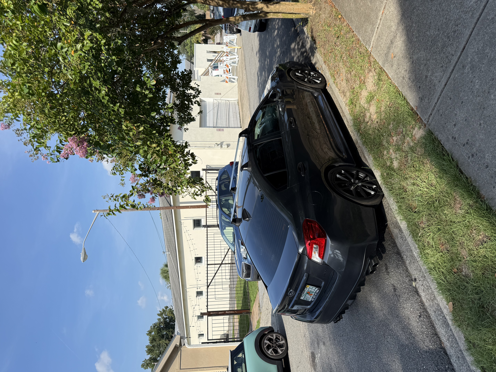
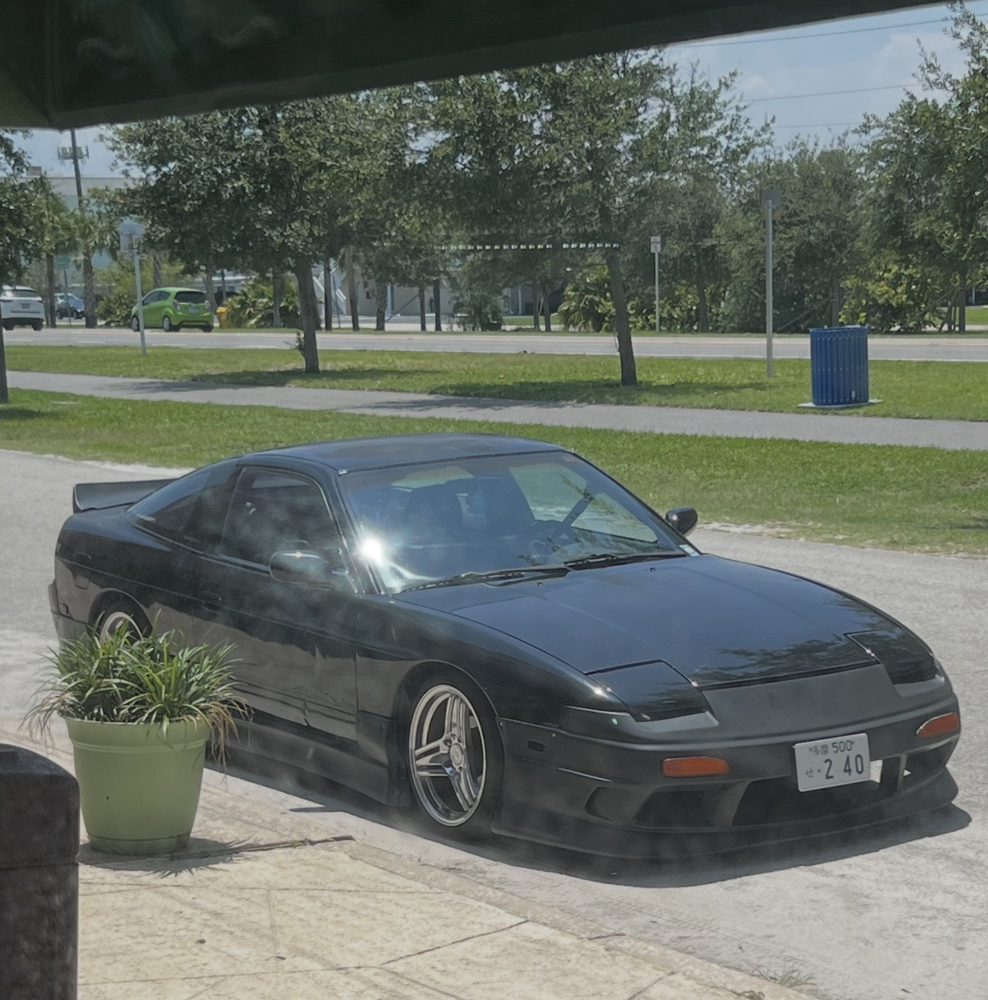

Who I Am

My name is Ethan Pierce, and I am a student at Daytona State College with an interest in information technology and web development.
I have experience working with computer hardware, software troubleshooting, GitHub, and other technology tools.
Technology and Development

I am continuing to build my skills in HTML, CSS, web programming, Git, GitHub, and software development through COP4813.
This website gives me a place to practice those skills while also creating a portfolio that I can continue improving throughout the semester.
Interests

Outside of school and technology, I also enjoy cars, gaming, music, and spending time outdoors.
I wanted this website to show some of my personality in addition to the technical work I complete for class.
Purpose of This Website
This website serves as both a class project and a personal portfolio. It allows me to organize my COP4813 assignments while demonstrating the skills I develop throughout the course.